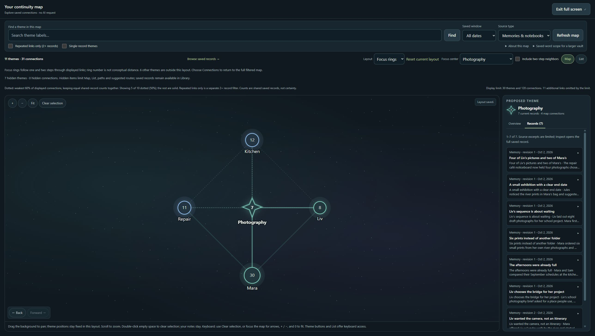

One life, overlapping projects.
Mara maintains buses at Northbank depot. She and her partner Sam moved into an old house near the river in May; their daughter Liv is fifteen. These six weeks follow a leaking roof, a possible change at work, a school photography project, visits with her father Pavel, and the small plans competing for the same weekends.
A work question can connect with a family afternoon. An old photograph can change a house project. These notes include decisions that are still open, guesses that needed correcting, and small details that would be easy to lose in a tidy summary.
The record is the evidence.
Each theme has a count of its supporting records. A connection counts records shared by two themes. Select it to read those records and any authored connection note. The website sample uses explicit theme tags to make those counts inspectable; PCS derives its Map from saved memory and notebook wording and topic labels.
Solid and dotted lines make dense views easier to read. The 60% dotted target is a presentation choice, not a confidence score. Equal-count links stay together, so the actual percentage can differ. The 2+ filter is separate: it keeps only connections supported by more than one record.
The app Map is a bounded view of saved content. A missing line does not prove that two parts of your life are unrelated, and a visible line does not establish cause or hidden beliefs.
Give the question a different view.
- Focus rings: place one theme at the center and inspect its neighborhood.
- Compare: choose two themes and see their shared and separate surroundings.
- Grid: spread themes into a regular arrangement for scanning.
- Saved-date: arrange themes by their latest supporting saved date. These are record dates, not dates of life events.
- List: browse with ordinary buttons when a graph is not the best way to read.
Search for a theme, filter memories or notebooks, drag nodes, zoom, hide a distracting item, or go back through your selections. Reset the view to begin again. Website changes last only while this page is open.
Take a useful thread back to Conversation.
In PCS you can save Map views, write connection notes, arrange or hide items, and inspect the supporting records. Review the app’s draft before placing it in Conversation. Browsing the Map does not require a running model; using evidence in an AI conversation follows your sharing choices.
The website is a focused demonstration. It does not open a vault, edit PCS records, persist your view, or call a model.

Read the records at your own pace.
All 36 authored examples are here, including the original passages and four owner corrections. The dates are the records’ latest saved dates within the fictional timeline.
October gets one new commitment
Booked the six-week rowing course beginning 4 October: £84 from my October leisure money, with equipment included. The possible museum trip on Saturday 10 October does not overlap; it still needs its own confirmation. Keep Sunday lunch flexible rather than assuming Dad must come immediately after rowing. House fund stays at £950 after the roof and kitchen payments; leisure spending is a separate pot. No additional regular repair-café shift for now. I would like some weekends with space between the useful things. The course is a six-week commitment, not a decision about every Sunday thereafter. At the end, decide whether I want more mornings on the water.
Original passageBooked the six rowing Sundays, £84 from October spending. Dad’s possible museum Saturday doesn’t clash, but Sunday lunch can move. No extra regular café shift. I want to try this course without using it as an excuse to timetable the rest of my life around it.
Four of Liv’s pictures and two of Mara’s
The repair café noticeboard now held four photographs chosen by Liv and two by Mara. Liv selected pictures she was comfortable showing outside school and wrote her own captions; the school project itself remained a separate, unfinished sequence. One visitor recognised the bridge steps before noticing that two different photographers had used them differently. Mara enjoyed that response more than a general compliment about the camera. They left room at the bottom for the repair café’s ordinary notices rather than filling every inch. The pictures would come down at the end of October. Mara wanted to keep the handwritten captions with the prints afterwards, since the file names would not preserve those choices.
Original passageWe put up four of Liv’s and two of mine. She chose the public ones and wrote her own captions. Someone recognised the steps and asked why we had stood on opposite sides. That was a much better conversation than being asked what camera we use.
The shelf is up, and the pans are reachable
The first kitchen stage cost the planned £210: £48 for timber, £62 for brackets and other fittings, and £100 for a reclaimed worktop. Pavel helped mark the shelf position from the cardboard plan, while Mara did the fitting. Sam put the two everyday pans on the new shelf and made dinner without balancing the board on the washing machine. The old cabinet doors still looked tired, and the floor had not improved. Those jobs were outside this stage. Mara sent Pavel a photograph of the finished corner and wrote the final amount in the house notebook, leaving £950 in the fund. The small plan had stayed small.
Original passage£48 timber, £62 fittings, £100 worktop: exactly the £210 we allowed. Dad checked the shelf marks and Sam tested the important feature, reaching a pan. The doors still look awful. Dinner was easier anyway. House fund now £950; I wrote it down before opening another catalogue.
Turning down the trial, keeping the teaching slot
Mara declined the October acting-supervisor trial because the two fixed late afternoons did not fit the arrangement she and Sam could make. She was disappointed about the extra pay and about leaving part of the role unexplored; the decision did not mean she had lost interest in progressing at work. Her manager agreed to trial a paid twenty-minute Friday teaching slot within her existing shift for four weeks. Noor would bring questions, and other technicians could join when work allowed. Mara wanted to see whether this helped before asking to expand it. She would revisit future roles with the actual hours in view, rather than treating this particular offer as her only chance.
Original passageI said no to the supervisor trial. The afternoons don’t fit, and I am allowed to be disappointed about the money without changing the answer. We have agreed four Friday teaching slots inside my shift. It is smaller than the promotion, but it is real work I want to try.
Borrowing a pump without starting another project
Mara found a flat rear tyre before an evening errand and realised the small pump in her bag was missing its connector. Nessa lent her a floor pump and waited with a cup of tea while Mara checked the tyre. Their conversation turned to Nessa’s loose shed latch, which Mara offered to look at on a later agreed afternoon. She did not abandon the errand to fix it immediately. The bicycle needed an ordinary repair, not the full overhaul Mara had been postponing or an excuse to compare newer bikes. She returned the pump that evening and put a replacement connector on the next shopping list.
Original passageBorrowed Nessa’s pump and actually returned it tonight. I can look at her shed latch on Friday, not instantly as repayment. The bike needs a repaired tyre and a pump connector. It does not need to become the next major improvement project in this household.
What remains after the roof bill
House fund reconciliation: £1,800 at the start, £640 roof invoice paid, £1,160 remaining. Kitchen first stage is still planned, not yet paid: £210 maximum. If it comes in at that amount, the fund will be £950. The possible £150 plaster repair would then leave the £800 reserve we wanted, but that job can wait until the roof has been tested by more rain. Photograph prints were personal spending and must not be deducted here. This is enough for the modest kitchen plan, not the full renovation. Leave the cabinet catalogue in the drawer until there is a different budget, rather than repeatedly trying to fit it into this one.
Original passagePaid roof: £640. Actual remaining: £1,160. Planned kitchen: no more than £210, leaving £950. Possible later plaster: £150. That leaves our £800 reserve if both jobs happen. The prints were my own spending. Writing “planned” beside a number is apparently essential for me.
The second rowing morning was still difficult
At her second beginner session, Mara remembered the order of the movements but still rushed when the boat felt unsteady. The instructor gave her one thing to watch, and she managed several strokes without trying to correct everything at once. She enjoyed being outside early enough to see the towpath fill gradually with walkers. The club offered a six-week beginner course starting 4 October for £84. She took the details home instead of booking at the river. The course would use Sunday mornings, so she wanted to check the museum plan and family lunches first. She did not need new equipment for the course, which made the decision easier to keep separate from shopping.
Original passageSecond rowing morning: still clumsy, occasionally less clumsy. Six Sundays from 4 October would cost £84 with the club’s equipment. I brought the dates home. I want to decide whether I want those mornings, not whether I like the idea of owning rowing things.
A small exhibition with a clear end date
Jules noticed the river prints in Mara’s bag and suggested using the repair café’s empty noticeboard for a month. Mara liked the idea but did not want to organise an exhibition programme. They agreed on six pictures, a short handwritten caption for each, and an end date at the close of October. Mara would ask Liv whether she wanted to contribute; participation was not part of her school assignment. Jules would clear the board and supply clips, while Mara would bring the finished selection the following Saturday. They made no plan for a launch, refreshments or online promotion. The pictures could simply be something to look at while waiting for a repair.
Original passageJules offered the empty board, and I nearly turned six pictures into an event to organise. We agreed: clips, captions, up until the end of October. No launch. I’ll ask Liv, not assume. People can look while they’re waiting for a kettle or a lamp.
An October day trip, not a weekend away
Possible 10 October trip with Dad: train to the transport museum, lunch nearby, home before the evening connection becomes awkward. He likes the woodworking in the old carriages as much as the vehicles. He does not want an overnight stay this time, so stop comparing hotels. Check the museum opening day and train fares before inviting everyone; this page is a plan, not a booking. Set aside at most £70 from October leisure money for my fare, Dad’s fare if he wants that, and lunch. Keep it separate from the house fund. Ask him whether he would rather have more time at the museum or a slower lunch.
Original passageDad would like the carriage exhibition but not a whole weekend away. October tenth might work. I have not booked anything. Need opening times, trains that actually connect, and an answer about lunch before I spend another evening looking at irrelevant hotels.
Which part of the trial actually needs afternoons?
Mara asked her manager whether the October trial could keep her usual finish time on most days, with one planned afternoon for handover work. The manager said the role currently included two fixed afternoon meetings and could not promise a different pattern for this trial. They agreed to revisit a smaller paid training responsibility even if she declined the supervisor offer. Mara had not yet given her answer. She wanted to consider the actual proposal, rather than an improved version she might be able to negotiate later. She wrote the decision date on the family calendar and left the weekend free of extra repair-café cover while she thought it through.
Original passageThe two late meetings are part of the trial as offered. I asked, and the answer wasn’t the flexible version I had in my head. We did talk about a paid training slot separately. I have until the twenty-third; I don’t need to invent a yes today.
Liv’s sequence is about waiting
Liv laid out eight draft photographs for her school project. Mara first arranged them by light and colour, then realised Liv had asked which order made the waiting people easiest to follow. They put the pictures back and started with Liv’s question. Her sequence began with an empty approach to the bridge and ended with two friends leaving in different directions. Liv wanted to remove the technically sharpest picture because it repeated something the previous one already showed. Mara found that choice interesting and wanted to remember it for her own editing. She asked before keeping a photograph of the layout; Liv said yes, but not to share the unfinished school work.
Original passageI began sorting Liv’s pictures into nice colours and that wasn’t what she had asked. She wants you to notice people waiting. She cut the sharpest one because it repeated the point. I took a picture of the layout with permission; it is not mine to send around.
Kitchen first stage: measured with cardboard
The cardboard shelf clears the back door now. Sam can reach the two pans we use most without moving the stack of mixing bowls. Pavel checked the drawing; we changed the depth rather than moving the door stop. First stage only: reclaimed worktop, timber shelf, brackets and fittings. No new cabinet fronts, no floor, no moving plumbing. Allow up to £210 and check the actual piece of worktop before paying. Keep the old table for now; we use it more than the imagined breakfast bar. The paper plan is tucked behind the kettle, with the measurement that matters circled rather than hidden among six attractive sketches.
Original passageThe cardboard version opens with the door, which seems a good start. Sam tried reaching the pans rather than just admiring the drawing. £210 maximum for this stage. Dad says we can stop redesigning the whole room every time we move one shelf.
Tomatoes from next door, mint from the path
Nessa brought over a bowl of late tomatoes, and Mara invited her to stay for lunch rather than promising a more formal thank-you. They ate outside beside the half-cleared garden bed. The rain barrel could fit near the shed if the mint was moved into a pot; this was a smaller and more useful plan than remaking the whole border. After lunch Mara walked to the river alone for twenty minutes while the others stayed at the table. The garden was still untidy when she got back. She liked that it had been used for a meal before it looked ready to be shown to anyone.
Original passageNessa’s tomatoes became lunch. We ate next to the weeds, and nobody seemed troubled by them. The barrel can go by the shed if I move the mint. I walked to the river afterwards and came back to people still talking at our unfinished table in the unfinished garden.
The repair is finished; the stain can wait
The roof repair was completed on the booked Saturday for the agreed £640. Mara photographed the work before the access equipment came down and saved the invoice with the house papers. She asked the contractor to point out what had been repaired, rather than nodding through an explanation from the ground. The dining-room stain remained, and the next useful check would be whether it stayed dry in sustained rain. Mara resisted starting the internal decorating that afternoon just to make the job feel visibly finished. She returned Nessa’s level, made lunch, and let the remaining daylight belong to something other than the house.
Original passageRoof done, £640 as agreed. I asked him to show me the repaired section before everything came down. The stain is still there, obviously. I had the paint chart in my hand and put it back. The next test is rain, not choosing a nicer white.
Six prints instead of another folder
Mara ordered six small prints from her own river photographs and spent £18 from her personal spending money, not the house fund. Most had been sitting on a drive for years. One showed the steps below the bridge before the railing was replaced; another caught a gull on a closed kiosk shutter. Liv liked the kiosk picture best and asked why Mara had never printed it. Seeing the images on the table made Mara less interested in replacing her camera. She still needed to sort a faulty battery, but the photographs themselves did not look as outdated as the equipment felt. She left two prints propped against the kitchen wall for a few days.
Original passageSix little prints arrived. Liv picked the gull on the kiosk, which I nearly left out because it wasn’t a proper landscape. The camera suddenly seems less urgent to replace. The £18 came from my own spending pot; I don’t want it disappearing into the roof arithmetic.
One handover happened without Mara staying late
The afternoon shift used Mara’s three-heading card to continue a cooling-system job without calling her back after she had left. A colleague still asked for the last test reading to be written more clearly, so the card was not finished as a design. Mara added a small space for the result rather than another long section. What pleased her was leaving on time with the work genuinely handed over. She wanted the supervisor discussion to recognise this kind of improvement, which did not depend on her personally staying until every problem was solved. One successful job was encouraging, but she wanted several more shifts of feedback before proposing it across the workshop.
Original passageThey picked up the cooling job from the card and I got home without a phone call about it. Apparently my final test reading was hard to find, so that needs a proper place. One good handover isn’t proof of a system, but I liked leaving on time.
A shelf drawing, not a rescue mission
Pavel looked over the kitchen shelf sketch during a short visit and spotted that the back door would catch the lowest corner. He suggested making a cardboard outline before cutting any wood. Nessa lent Mara a long level so they could see how uneven the wall was. Neither offer required handing over the project. Mara had been reluctant to ask because she imagined a request growing into an entire weekend of someone else’s labour. This was more contained: Pavel checked a drawing, Nessa lent one tool, and Mara still had to make the decisions with Sam. She put the level by the front door with a note to return it on Thursday.
Original passageDad spotted the door problem in about ten seconds. Make it in cardboard first, he said. Nessa lent the long level. I think I avoid asking because I picture an enormous favour, when sometimes the favour is a pencil mark and a tool for three days.
A first rowing session with no equipment to buy
Mara tried the rowing club’s beginner morning while Sam went for a walk along the bank. The club supplied the equipment, so she did not have to decide whether this was a new hobby before trying it. She spent most of the session getting the timing wrong and watching the person in front. That was tiring in a different way from solving a workshop fault. Afterwards she and Sam had tea from paper cups and looked at the next available beginner date, 20 September. She wanted to try once more, after the roof job, before considering a course. Sam was interested in coming along for another walk, not in learning to row.
Original passageI was quite bad at rowing this morning and nobody needed me to solve that immediately. Sam walked along the bank and met me afterwards. There’s another beginner session on the twentieth. Two tries before I buy anything or describe myself as a rower.
Mrs Dunn’s radio was worth the bench space
At the repair café, Mrs Dunn brought a small radio with a loose control and the original instruction booklet folded into its case. She said a replacement would be cheaper than taking it to a shop, but it was the radio her husband had used in the garden. Jules found a suitable spare in a labelled drawer. Mara was reminded that the choice between repairing and replacing was not always a price comparison. At home, she was still happy to buy a sound second-hand worktop rather than rescue every worn kitchen fitting. The visit did not change that plan; it made her ask which particular things they wanted to keep and why.
Original passageMrs Dunn brought the radio booklet as carefully as the radio. Jules found the little part in a drawer I would never have thought to open. It made me think about our kitchen: keeping something matters more when we can say what we are keeping it for.
An acting-supervisor offer, not a decision
Mara’s manager offered her a four-week acting-supervisor trial beginning in October. The proposal included two afternoon meetings each week, beyond her usual early shift. She was interested in influencing handovers and training, but she had not accepted. After initially describing the trial as though it were settled, she clarified that she was waiting for the hours in writing and wanted to discuss alternatives. The extra pay was welcome, especially with work on the house, but it was not enough information by itself. She had until 23 September to answer. She planned to ask which parts of the role actually required her to remain on site later.
5 September: I have not accepted the trial. “Looks like I’m doing it” was me talking ahead of the decision. The offer is still open, the afternoon hours are unresolved, and my answer is due on 23 September.
Original passageLooks like I’m doing the acting-supervisor trial in October. Four weeks, extra money, and perhaps a chance to sort the handovers out. The afternoons are the bit I haven’t worked through. I asked for the hours on paper before we talk properly next week.
The afternoons were already full
Mara and Sam compared their September schedules at the kitchen table. Sam’s library rota included two Saturday mornings and a later Wednesday. Liv’s after-school photography club would finish too late for the route they had practised in daylight once the evenings shortened. None of this automatically ruled out the supervisor trial, but it made clear that changing Mara’s hours would move work onto someone else. They wrote down the specific journeys that needed covering instead of agreeing vaguely to be more flexible. Liv could travel with Amira on some days; that was one option, not a promise on her behalf. Mara took the list to her next conversation with her manager.
Original passageWe put the actual rotas next to each other. My free afternoons aren’t empty: some are school journeys, some let Sam do his late Wednesday. There may be a way to move things, but “we’ll work it out” needs names and days beside it.
Liv chooses the bridge for her project
Liv’s school photography brief asked for a place people use, shown from more than one point of view. She chose the old footbridge and wanted to include the waiting, crossing and meeting around it rather than only its shape. Mara offered her old river photographs, then waited while Liv decided whether any were useful. Liv picked one wide view for comparison but wanted to make the main sequence herself. They agreed to check before photographing anyone closely enough to be recognised. Mara liked seeing the bridge become a subject without it becoming a joint project. She found the camera charger and left the rest of the planning to Liv.
Original passageThe project is “a place people use”, and Liv has chosen the footbridge. She wants feet waiting and people meeting, not just a pretty bridge. She picked one of my old wide pictures. I found the charger and tried not to turn that into joining her project.
Three headings on the handover card
Try three headings for the next fortnight: what happened, what we checked, what the next shift needs to know. Noor pointed out that “checked” can mean a visual look or a full test, so write which one. Keep the card attached to the job, not in a separate notebook that stays in my locker. We tried it on two jobs today; the second took longer because the last test had no clear result. That uncertainty belongs on the card too. Ask the afternoon shift whether they used the information before calling this an improvement. A neat form is not much use if nobody can find it at the handover.
Original passageThree headings, not another form with twelve boxes. What happened, what we checked, what comes next. Noor said “checked” needs explaining. Fair point. We have tried two cards so far; I want the afternoon shift’s opinion before making a stack of them.
The roof quote that included the access
Two roof quotes arrived. One showed £410 but excluded access equipment; the other was £640 including access, the repair and removal of the damaged material. After asking the first firm for a complete price, Mara chose the £640 quote and booked 12 September. The contractor said the internal stain should be left alone until they could see that the repair had held through rain. Mara pencilled in £150 for later plaster work, without treating it as a commitment. She still disliked spending the money on something they would barely see, but a defined job and date were easier to plan around than a bowl on the dining-room table.
Original passageThe £410 quote wasn’t really a £410 job once I asked about getting up there. We’ve booked the complete £640 repair for 12 September. No painting the stain yet. It is frustrating to spend first on the part of the house nobody will admire.
Sunday lunch without the late connection
Pavel came for Sunday lunch on the earlier bus. Sam made lentils and roast tomatoes, and they left the table set until well into the afternoon. Pavel talked about a set of drawers he had made for Mara when she first left home; she had forgotten the replacement handle on the bottom one was his work too. They checked the return time before starting tea so leaving would not become a last-minute scramble. The visit lasted less time than the old Wednesday evenings, but nobody was watching for a delayed connection after dark. Mara would like to do another Sunday without turning it into a fixed weekly arrangement everyone has to maintain.
Original passageDad came on the early bus and stayed for lunch. Sam did tomatoes and lentils, nothing elaborate. We checked his return before putting the kettle on. I would like more days like that, but I don’t want to announce a permanent Sunday tradition after one good afternoon.
A school route with a different way home
Mara and Liv rode the school route on Saturday morning. The quickest way used a junction Liv disliked, so they tried the river path and timed the difference. It added seven minutes and avoided that turn. Liv wanted to ride home with her friend Amira on some days, using a route Mara would not normally choose for an errand. Mara agreed to distinguish the journey they had checked together from a rule that every trip had to be identical. They stopped at the old footbridge because Liv wanted a photograph of the reflection beneath it. Mara held the bicycles and did not suggest where Liv should stand.
Original passageThe towpath adds seven minutes, which is less than either of us expected. Liv wants to come back with Amira some days. At the bridge she told me where to hold the bikes so they weren’t in the picture. I managed not to offer photographic direction.
Nessa’s rain barrel and the shared drain
Nessa next door came round because water had pooled along their shared fence during the storm. They checked where the garden downpipe emptied and found a blockage at the surface drain, separate from the leak over Mara’s dining room. Nessa knew which section had overflowed in previous winters. They cleared the leaves together and agreed to watch it during the next heavy rain. Mara had been planning the garden around an attractive bed by the fence; she moved that idea down the list until she understood the wet ground. Nessa offered a spare rain barrel later, once they had decided where it could stand without blocking the narrow path.
Original passageNessa knows exactly where the garden floods and I have been drawing a flower bed on that spot. We cleared leaves from the drain, which is its own problem, not the roof leak. She has a spare barrel, but we need to leave enough path for the bikes.
Meeting Pavel at his library
Mara met Pavel near his library instead of asking him to make the awkward bus connection to her house. He showed her the revised timetable and pointed out the return journey that had stopped working for Wednesday dinners. They found an earlier Sunday service he liked, then left the next visit open until Sam checked the library rota. Pavel also offered to look at their kitchen measurements. Mara asked for help planning the shelf, not for him to take on the whole renovation. He seemed pleased to have a specific question and brought out a pencil before they had finished their tea. She took the timetable home to check the actual dates.
Original passageDad brought the timetable to the café by the library. There it was: a forty-minute wait on the way back. We found a Sunday option. I asked if he would check the shelf measurements, and he had a pencil out before I’d moved the cups.
Why Pavel stopped coming on Wednesdays
Pavel had cancelled two Wednesday dinners, and Mara initially wondered whether the weekday visits had become a burden. When she asked him the following week, he explained that the direct bus had been replaced by a connection with a long wait on the way home. He still wanted to visit; he disliked making a late return dependent on someone collecting him. Mara corrected her earlier interpretation rather than treating the cancellations as a change in his interest. They had not yet settled a replacement routine. Meeting near his library, or arranging a Sunday lunch with an earlier journey home, both seemed more practical than insisting on the old Wednesday pattern.
26 August: Dad told me the bus connection changed. He still wants to come. The difficult part is the long wait going home, not dinner with us. My earlier guess about him losing interest was a guess.
Original passageDad has cancelled Wednesday again. I said no problem, but I keep wondering if he just doesn’t enjoy the trip over here now. We used to do soup and whatever bread Sam brought home. I miss that unremarkable bit of the week.
Noor’s question at the end of the shift
Noor asked why Mara listened to a motor before checking the fault history. Mara could describe the sound she was listening for but found it harder to explain how much confidence she placed in it. They stayed ten minutes after the shift and compared two recordings made for workshop training. It was more useful than telling Noor she would learn the difference with experience. Mara wanted to try a short weekly slot where Noor could bring one specific question, provided it was part of paid work. She also noticed that a question could reveal something worth putting in a handover, rather than being an interruption to finishing one.
Original passageNoor asked what I was listening for and “you’ll get an ear for it” sounded useless as soon as I said it. We found the training recordings and compared them. I could do twenty minutes of this on a Friday, but not as an invisible extra after every shift.
The house fund, before either quote
House fund today: £1,800. First get a written roof quote that says what access and making good are included. Do not treat the smallest number on the page as the full price. We want at least £800 left for another unexpected repair. The kitchen can have a smaller first stage if the roof leaves enough room: level worktop, useful shelf, no whole set of cabinets. Ask Sam which change would make cooking easier this week before buying materials. The stained patch inside can wait until the roof is fixed and dry. Keep estimates separate from money actually spent; the current spreadsheet makes them look equally final.
Original passageI need one page with the order of jobs. Roof first, useful kitchen changes second, paint last. Keep £800 untouched if we can. A quote is not a payment and a saved basket is not a decision, although my spreadsheet currently gives all three the same colour.
What Sam meant by a better kitchen
While making soup, Sam moved the chopping board from the uneven section of worktop to the washing-machine lid for the third time. That was the kitchen problem Sam most wanted solved. Mara had been comparing complete sets of units, partly because it seemed wasteful to improve something they might later replace. Over dinner they drew a smaller plan on an envelope: one level preparation surface, a shelf for the heavy pans, and room to open the back door without moving a chair. The roof still came first. A modest kitchen job after that would not settle the eventual renovation, but it could make the room easier to use this autumn.
Original passageSam doesn’t mean “new kitchen” in the same way I do. He means somewhere flat to cut an onion and not having the biggest pan fall on him. We drew the actual problems on an envelope over soup. It is a much shorter list than the catalogue.
Liv wanted the camera, not an itinerary
Mara offered Liv a Sunday walk by the river and started describing a route before Liv had answered. Liv declined the organised outing but later asked to borrow the old camera for the footbridge. Mara clarified after another conversation that Liv had not lost interest in the river or in taking pictures. She wanted to decide where to stop and sometimes go with a friend. The distinction mattered because Mara had nearly packed the camera away again, assuming the hobby was hers alone. They agreed that borrowing it did not require joining a family walk. Mara could still take her own photographs on a different stretch of the towpath.
23 August: Liv said she likes the river. She did not want me planning her whole afternoon. Don’t turn her refusal of my suggested outing into “Liv dislikes river walks” or “photography is our shared activity.” She gets to choose.
Original passageLiv said the river walk sounded boring, then asked where my old camera was. I don’t quite understand that. I thought we could make a proper afternoon of it, bridge and towpath and a stop for chips, but apparently that was too much planning.
Two hours at the repair café
Jules asked whether Mara could cover a full Saturday at the repair café because two regular volunteers were away. Mara offered the first two hours instead. She wanted to help, but the house already had an unfinished list and Sam was working at the library until lunchtime. Jules accepted the shorter slot without trying to extend it. They repaired a desk fan together and spent nearly as long finding the correct box for its spare screws. Mara enjoyed the work more once she knew when she would leave. She did not want a standing promise to cover every absence, though she was happy to be asked about particular dates.
Original passageI told Jules I could do ten until twelve, not the whole day. She just said that would help and wrote it down. Somehow I’d prepared for a negotiation that didn’t happen. Came home with enough afternoon left to do nothing useful for half an hour.
The fault note that missed an earlier repair
Mara and apprentice Noor traced an intermittent fault on bus 214 to a connection altered during an older repair. The job sheet described the latest symptom but did not mention that earlier change, which cost them time before they opened the right panel. Mara later clarified that Noor had neither made the earlier repair nor caused the fault. Her concern was the missing history between shifts. She wanted the handover to include what had already been tested and anything left in a nonstandard arrangement, rather than simply naming the suspected component. Noor’s own notes about when the fault appeared were useful in narrowing the search.
19 August: “Noor’s bus fault” meant the job assigned to her. She did not cause it. The old repair predates her placement, and her observations helped us find it. Keep the missing handover history separate from her work.
Original passageSpent most of the morning untangling Noor’s bus fault. We finally found an old repair that wasn’t on the sheet. I kept thinking that three useful lines from the last person would have saved us both an hour of guessing where to begin.
A bowl under the dining-room light
Rain came through beside the dining-room light before Mara’s early shift. She put a mixing bowl underneath and moved the table, then spent the bus ride to work thinking about the kitchen units they had been pricing. The house fund held £1,800. She did not yet know whether the problem was a slipped tile or a much larger repair, so she wanted a roof inspection before committing any of that money to the kitchen. The house had been theirs since May, but this was the first problem that made the order of work feel less like a choice. The dining room remained usable once the rain stopped.
Original passageThere’s a bowl on the dining-room table and it is not for breakfast. Rain is coming in beside the light. We have £1,800 in the house pot, so the kitchen browsing needs to pause until someone has actually looked at the roof.